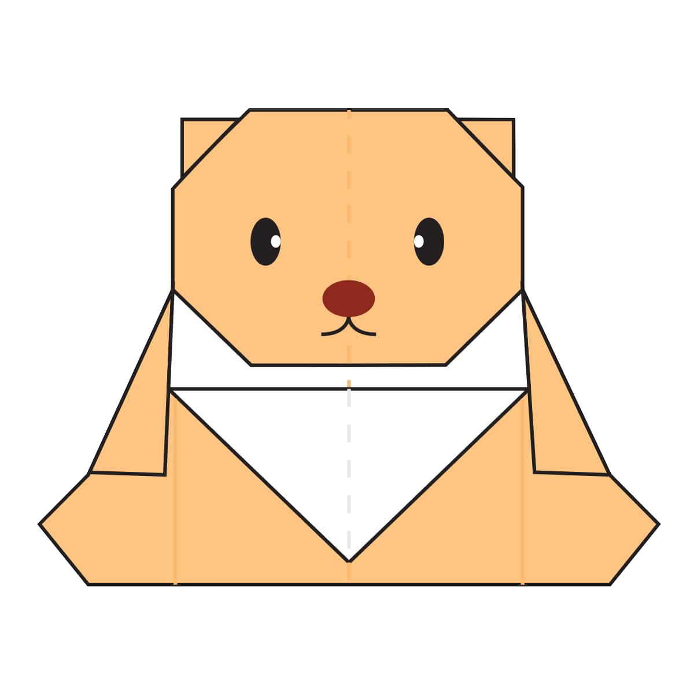

Facts About Panda🐼:
- Giant pandas are good at climbing trees and can also swim.
- An adult can eat 12–38 kilos of bamboo per day!
- Unlike most other bears, pandas do not hibernate.
- Video tutorial

Facts About Camel🐪:
- Camel's humps are not used to store water.
- Camel can move easily across the sand because of its specially designed feet.
- Camel can survive without food and water long period of time.
Video tutorial

Facts About Chameleon🦎:
- Chameleons can see in both visible and ultraviolet light.
- Chameleon eyes have a 360-degree arc of vision and can see two directions at once.
- Chameleon are reptiles that are part of the iguana suborder.
Video tutorial

Facts About Pigeon🕊️:
- Pigeons have excellent hearing abilities.
- Pigeons and humans have lived in close proximity for thousands of years.
- Pigeons can fly at altitudes up to and beyond 6000 feet, and at an average speed of 77.6 mph. The fastest recorded speed is 92.5 mph.
Video tutorial

Facts About Cicada🦗:
- Cicadas can be black, brown or green and can have red, white or blue eyes.
- Their wings are transparent and can seem rainbow-hued when held up to a light source.
- There are more than 3,000 species of cicadas.
Video tutorial

Facts About Teddy-bear🧸: